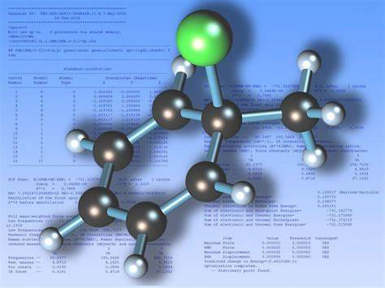
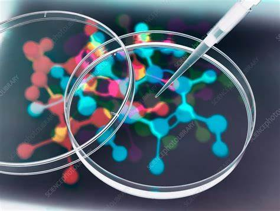

The days are long past when one person could hope to have a detailed knowledge of all areas of chemistry. Those pursuing their interests into specific areas of chemistry communicate with others who share the same interests.
.jpg)
The areas of specialization that emerged early in the history of chemistry, such as organic, inorganic, physical, analytical, and industrial chemistry, along with biochemistry, remain of greatest general interest. There has been, however, much growth in the areas of polymer, environmental, and medicinal chemistry during the 20th century. Moreover, new specialities continue to appear, as, for example, pesticide, forensic, and computer chemistry.

Organic Chemistry is another scope within Chemistry.It involves scientific studying structure properties and many more aspects of the organic componenets. he range of chemicals studied in organic chemistry includes hydrocarbons (compounds containing only carbon and hydrogen) as well as compounds based on carbon, but also containing other elements,especially oxygen, nitrogen, sulfur, phosphorus (included in many biochemicals) and the halogens. Organometallic chemistry is the study of compounds containing carbon metal bonds.

Inorganic chemistry is the study of the synthesis and behavior of inorganic and organometallic compounds. It covers all chemical compounds except the myriad organic compounds (carbon-based compounds), which are the subjects of organic chemistry123. Inorganic chemistry has applications in every aspect of the chemical industry, including catalysis, materials science, pigments, surfactants, coatings, medications, fuels, and agriculture.

Biochemistry is the study of chemical processes within and relating to living organisms. It is a sub-discipline of both chemistry and biology, and may be divided into three fields: structural biology, enzymology, and metabolism1. Biochemistry focuses on understanding the chemical basis which allows biological molecules to give rise to the processes that occur within living cells and between cells, in turn relating greatly to the understanding of tissues and organs, as well as organism structure and function